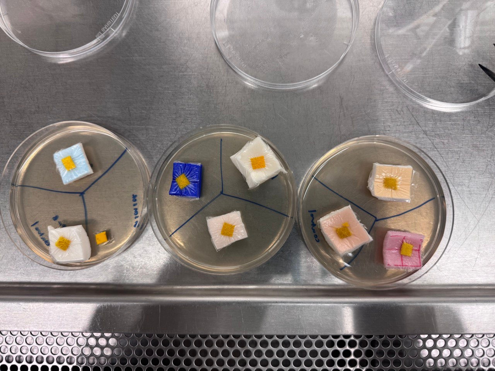

Research Project
2024

Compatibility Assessment of Biosensor with Foam Dressings for Bacterial
Detection in Low- and High-Exudate Wounds
Early detection of skin wound infections is challenging, as current diagnostic methods are slow,
invasive, or complex. To address this, Dr. Song’s team at the University of Manitoba developed a
nanofiber biosensor that employs hemicyanine dye (HCy). This biosensor changes color (yellow to
green) in response to bacterial lipase—an enzyme bacteria secrete during infection—providing
real-time visual monitoring for infections.
My contribution involved testing the biosensor's compatibility with 7 foam dressings and its effectiveness against 3 bacterial strains (P. aeruginosa, E. coli, MRSA) for clinical use.
Findings: Curafoam, Hydrofera, Optifoam Basic, and Quick were most compatible. Dressing thickness and fluid permeability can impact biosensor's performance across various wound exudate volumes.
See research paper.
My contribution involved testing the biosensor's compatibility with 7 foam dressings and its effectiveness against 3 bacterial strains (P. aeruginosa, E. coli, MRSA) for clinical use.
Findings: Curafoam, Hydrofera, Optifoam Basic, and Quick were most compatible. Dressing thickness and fluid permeability can impact biosensor's performance across various wound exudate volumes.
See research paper.
Acknowledgements Dr. Song Liu, P.Eng Farinaz Jonidi Shariatzadeh, PhD Candidate